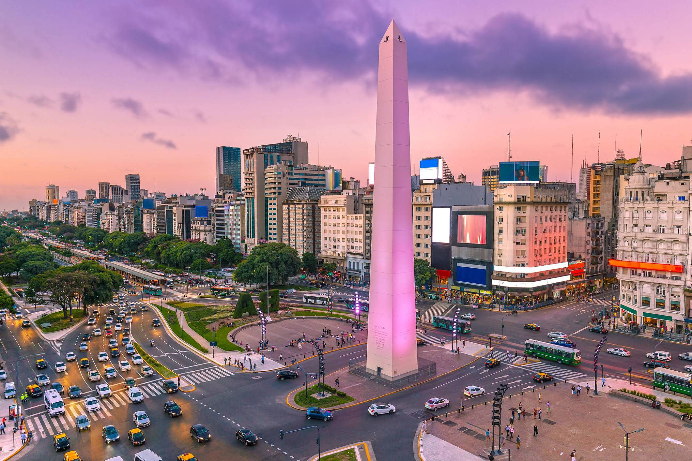
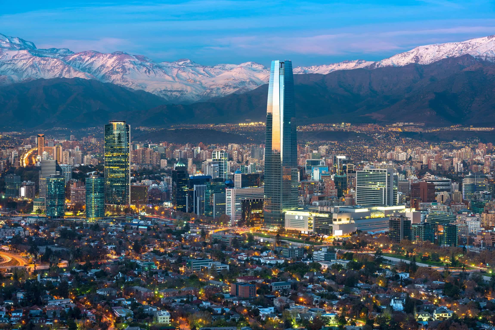

Viajes disponibles
Los viajes que saldran esta noche son:
Tus mejores opciones para estas vacaciones son
Buenos aires Argentina

✨ ¡Déjate seducir por Buenos Aires! ✨
Conocida como la "París de Sudamérica", Buenos Aires combina elegancia europea con la pasión latina en cada rincón. Recorre la icónica Avenida 9 de Julio, disfruta del colorido Caminito en La Boca y vive la magia del tango en sus tradicionales milongas.
La gastronomía porteña es un deleite para los sentidos: saborea la mejor carne a la parrilla, visita cafés históricos como el Tortoni y descubre mercados gastronómicos llenos de innovación y tradición.
Sumérgete en su riqueza cultural con una visita al Teatro Colón, una de las mejores salas del mundo, o explora la impresionante librería El Ateneo Grand Splendid. Y, por supuesto, siente la pasión futbolera en la mítica Bombonera o el Monumental.
Vibrante, apasionada e inolvidable, Buenos Aires te espera con los brazos abiertos. ¡Vívela intensamente! 🌎✈️✨
Santiago Chile

✨ ¡Descubre la magia de Santiago de Chile! ✨
Ubicada entre la imponente Cordillera de los Andes, Santiago combina modernidad, historia y naturaleza en un equilibrio perfecto. Recorre su centro histórico, con la majestuosa Plaza de Armas y la Catedral Metropolitana, y maravíllate con las vistas panorámicas desde el Cerro San Cristóbal o el Costanera Center.
Sumérgete en su vibrante escena cultural en el Barrio Lastarria, explora museos de clase mundial y disfruta de una gastronomía exquisita, con mariscos frescos, empanadas y vinos de primer nivel.
Desde Santiago, las posibilidades son infinitas: visita la colorida Valparaíso, disfruta de catas en los viñedos del Valle de Casablanca, o aventúrate en la Cordillera para esquiar en invierno y hacer senderismo en verano.
Si buscas una ciudad que lo tenga todo, Santiago te espera con los brazos abiertos. ¡Vívela al máximo! 🌎✈️✨
Toronto Canadá

✨ ¡Explora la increíble Toronto! ✨
Descubre una de las ciudades más vibrantes y multiculturales del mundo. Con su imponente skyline dominado por la icónica Torre CN, Toronto ofrece una combinación perfecta de modernidad, cultura y entretenimiento. Recorre sus barrios llenos de identidad, como Chinatown, Kensington Market y Little Italy, y disfruta de una gastronomía tan diversa como su gente.
Sumérgete en el dinamismo de Yonge-Dundas Square, explora museos de renombre como el Royal Ontario Museum, y vive la emoción del deporte con los Raptors, Blue Jays o Maple Leafs. Relájate en las Toronto Islands, con vistas espectaculares, y maravíllate con las impresionantes Cataratas del Niágara, a solo unas horas de la ciudad.
Toronto lo tiene todo: cultura, naturaleza y experiencias inolvidables. ¡Es hora de vivir la magia de esta ciudad única! 🌎✈️✨
E.E.U.U New York

✨ ¡Descubre la magia de Nueva York! ✨
La ciudad que nunca duerme te espera con su energía vibrante, su diversidad inigualable y su infinita oferta de experiencias. Recorre Times Square, maravíllate con las vistas desde el Empire State Building y sumérgete en la historia en la Estatua de la Libertad. Explora barrios llenos de personalidad, como el bohemio Greenwich Village, el moderno Hudson Yards y el auténtico Brooklyn con su famoso puente.
Disfruta de la mejor gastronomía del mundo, desde food trucks hasta exclusivos restaurantes con estrellas Michelin. Vive la emoción de Broadway, visita icónicos museos como el MET y el MoMA, y relájate en el oasis de Central Park.
Nueva York es una ciudad que inspira, emociona y sorprende en cada rincón. ¡No esperes más y haz de tu viaje un recuerdo inolvidable! 🌎✈️✨